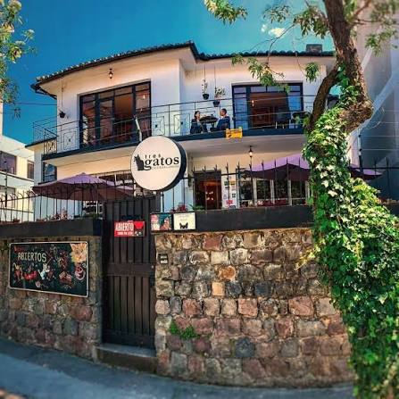
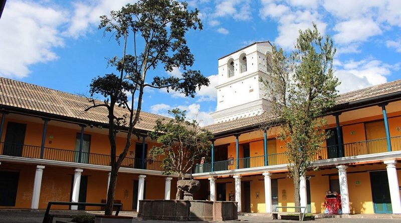
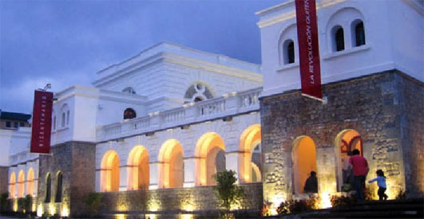
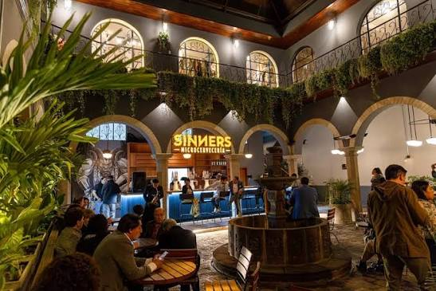
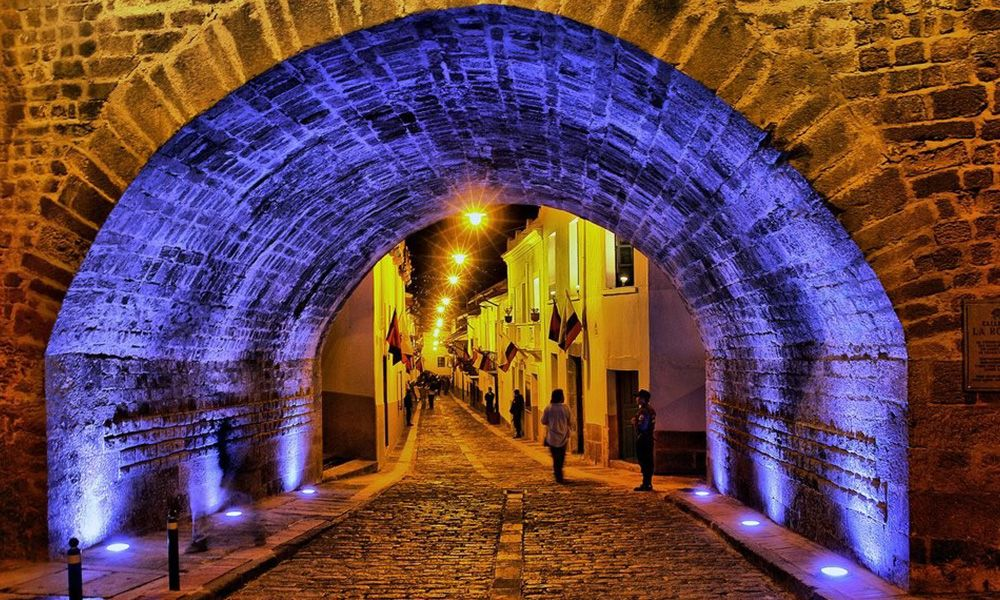

Día 9: El plan pendiente
Llegamos al Día 9 y hoy vamos a armar la ruta de nuestro plan pendiente.
El plan perfecto empieza conmigo pasándote a ver a donde sea que tú estés para que así estés cien por ciento segura en esta ciudad de locura y ninguno de los dos termine perdido buscando al otro.
☕ Parada 1: Tres Gatos
De ahí la parada fija que tenemos que hacer es el café Tres Gatos. Se ve muy pero muy lindo y de hecho creo que ya te mandé foto alguna vez.

🏛️ Parada 2: Museo de la Ciudad
Después de eso podríamos recorrer un poco la ciudad y dar una vuelta por el centro. Tenemos dos actividades muy divertidas por hacer. Primero el Museo de la Ciudad aunque la infinidad de museos que hay en el centro es grandiosa.

🎨 Parada 3: Arte y Tatuajes
También es parada obligatoria ir a ver qué se está presentando en el Centro de Arte Contemporáneo JAJAJ. Y si estuviéramos en buenas épocas podríamos ir con mi tatuador para que te vayas llevando un recuerdito JAJAJ.

🍻 Parada 4: Sinners
Para ir cerrando la tarde y que no regreses muy noche podríamos terminar la tarde y empezar la noche con un par de cervezas dentro de Sinners. En especial podrías probar la Dark Soul que es la que lleva café y se ve muy buena.

🎤 Parada 5: La Ronda
Y con la energia y la pica del punto anterior me parece un plan excelente meternos a un karaoke en La Ronda para darlo todo en el micrófono y cantar hasta quedarnos sin voz. y asi darle un cierre perfecto al pln perfecto

¡Ve haciendo espacio en tu agenda! Nos vemos mañana 💜